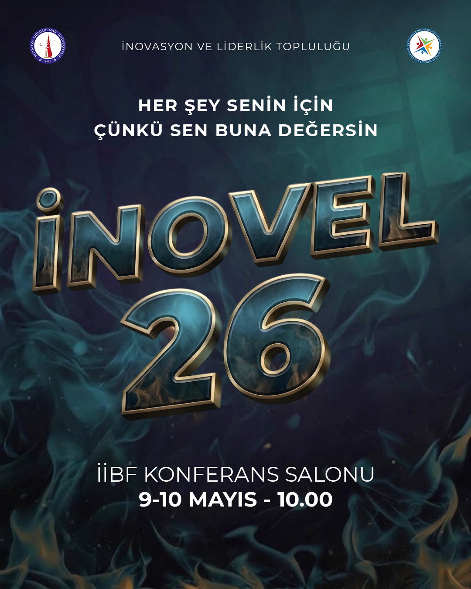

9–10 MAYIS 2026
İNOVEL26.
Her şey senin için.
Çünkü sen buna değersin.
- Tarih
- 9–10 Mayıs 2026
- Saat
- 10.00
- Yer
- İİBF Konferans Salonu
Bu etkinlik sona erdi.
Diğer İnovel etkinlikleri

9–10 MAYIS 2026
Her şey senin için.
Çünkü sen buna değersin.
Bu etkinlik sona erdi.
Diğer İnovel etkinlikleri